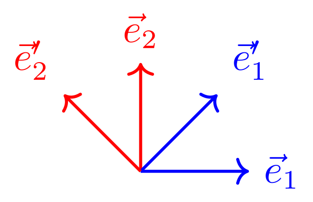
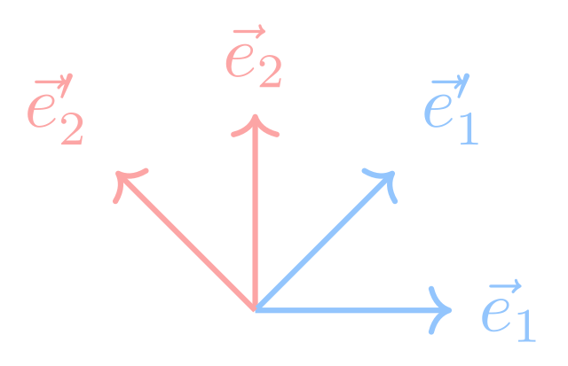

第六章 线性空间
子空间、线性相关性、极大无关组、秩、基与维数。
进度0%
掌握 0 / 39§6.1
数组空间
§6.1.1
数组空间 · 第1页
线性空间 / 数组空间
空间 \(\xrightarrow[1:1]{\text{坐标系}}\) \({\mathbb R}^3\) \(\xrightarrow{\text{推广}}\) \({\mathbb F}^n={\mathbb F}\times {\mathbb F}\times \cdots \times {\mathbb F}\).
定义 6.1.1
设\({\mathbb F}\)为数域. 带线性运算的\(n\)维数组向量全体
\[\{(a_1,a_2,\cdots,a_n)\mid a_i\in {\mathbb F}\}\]
称为\(n\)维数组空间.记为 \({\mathbb F}^n\).
线性组合(组合系数,线性表示)
定义 6.1.2 线性相关,线性无关
一组向量 \(\vec{a}_1\), \(\vec{a}_2\), \(\cdots\), \(\vec{a}_m\) 称为线性相关, 若存在一组不全为零的实数 \(\lambda_1\), \(\lambda_2\), \(\cdots\), \(\lambda_m\) 使得
\[\lambda_1\vec{a}_1 + \lambda_2\vec{a}_2 + \cdots + \lambda_m\vec{a}_m=0.\]
反之, 则称向量 \(\vec{a}_1\), \(\vec{a}_2\), \(\cdots\), \(\vec{a}_m\)的线性无关.
这页感觉如何？
§6.1.2
数组空间 · 第2页
线性空间 / 数组空间
给定空间中的\(m\)个向量\(\vec{a}_1,\vec{a}_2,\cdots,\vec{a}_m\).
考虑这\(m\)个向量的全体线性组合
\[V:=\langle\vec{a}_1,\vec{a}_2,\cdots,\vec{a}_m\rangle:=\{\lambda_1\vec{a}_1+\lambda_2\vec{a}_2+\cdots+\lambda_m\vec{a}_m\mid \lambda_1,\cdots,\lambda_m\in {\mathbb F}\}\]
这是\({\mathbb F}^n\)的一个非空子集满足
-
任取\(\vec{b}_1\), \(\vec{b}_2\in V\),都有\(\vec{b}_1+\vec{b}_2\in V\);
-
任取\(\vec{b}\in V\)以及\(\lambda\in {\mathbb F}\),都有\(\lambda\vec{b}\in V\).
上面两条也等价于
-
任取\(\vec{b}_1\), \(\cdots\), \(\vec{b}_\ell\in V\)以及\(\mu_1,\cdots,\mu_\ell\),都有\(\mu_1\vec{b}_1+\cdots+\mu_\ell\vec{b}_\ell\in V\).
定义 6.1.3
设\(V\)为\({\mathbb F}^n\)的一个非空子集.若\(V\)满足上述前两条或第三条,则称\(V\)为\({\mathbb F}^n\)的子空间.
子空间可看成是三维空间中过原点的线和平面在高维时的推广.
这页感觉如何？
§6.1.3
数组空间 · 第3页
线性空间 / 数组空间
例题 6.1.1 平凡子空间
\(V=\{0\}\)或\(V={\mathbb F}^n\).
例题 6.1.2 生成子空间
\(\langle\vec{a}_1,\vec{a}_2,\cdots,\vec{a}_m\rangle\) 由\(\vec{a}_1,\vec{a}_2,\cdots,\vec{a}_m\)生成的子空间.
特别地，给定一个阶矩阵\(A\in{\mathbb F}^{m\times n}\),则其所有列向量可生成 \({\mathbb F}^m\)的一个子空间，其所有行向量可生成\({\mathbb F}^n\)的一个子空间。
例题 6.1.3 用子空间的观点来理解线性方程组
设\(A=(\vec{a}_1,\cdots,\vec{a}_m)\). 则 \(Ax=\vec{b}\) 有解当且仅当 \(\vec{b}\in \langle\vec{a}_1,\vec{a}_2,\cdots,\vec{a}_m\rangle\).
例题 6.1.4 齐次线性方程组的解空间
\(n\)个变元的齐次线性方程组的解空间为\({\mathbb F}^n\)的一个子空间.
这页感觉如何？
§6.1.4
数组空间 · 第4页
线性空间 / 数组空间
例题 6.1.5 线性映射的像(image)
设\({\mathcal A}\colon {\mathbb F}^n\rightarrow {\mathbb F}^m\)为一个线性映射.则
\[\mathrm{im}({\mathcal A}):=\{{\mathcal A}(\vec{x}) \mid \vec{x}\in {\mathbb F}^n\} \subseteq {\mathbb F}^m\]
为\({\mathbb F}^m\)的一个子空间。称为线性映射\({\mathcal A}\)的像.
例题 6.1.6 线性映射的核(kernel)
设\({\mathcal A}\colon {\mathbb F}^n\rightarrow {\mathbb F}^m\)为一个线性映射.则
\[\ker({\mathcal A}):=\{\vec{x} \in {\mathbb F}^n \mid {\mathcal A}(\vec{x})=0\} \subseteq {\mathbb F}^n\]
为\({\mathbb F}^n\)的一个子空间。称为线性映射\({\mathcal A}\)的核.
这页感觉如何？
§6.2
线性相关性
§6.2.1
线性相关性 · 第1页
线性空间 / 线性相关性
给定一组(列)向量 \(\vec{a}_1\), \(\vec{a}_2\), \(\cdots\), \(\vec{a}_m\). 则以下几条相互等价:
-
\(\vec{a}_1\), \(\vec{a}_2\), \(\cdots\), \(\vec{a}_m\) 线性相关;
-
存在\(i\in\{1,\cdots,m\}\)以及\(\lambda_1\cdots\lambda_{i-1},\lambda_{i+1},\cdots,\lambda_m\in {\mathbb F}\) 使得\[\vec{a}_i=\lambda_1\vec{a}_1 + \cdots+ \lambda_{i-1}\vec{a}_{i-1} +\lambda_{i+1}\vec{a}_{i+1} + \cdots + \lambda_m\vec{a}_m;\]
-
存在\(i\in\{1,\cdots,m\}\) 使得\[\vec{a}_i \in \langle \vec{a}_1,\cdots,\vec{a}_{i-1},\vec{a}_{i+1},\cdots,\vec{a}_m\rangle;\]
-
存在\(i\in\{1,\cdots,m\}\)使得\[\langle \vec{a}_1,\vec{a}_{2},\cdots,\vec{a}_m\rangle = \langle \vec{a}_1,\cdots,\vec{a}_{i-1},\vec{a}_{i+1},\cdots,\vec{a}_m\rangle;\]
-
线性方程组 \(AX=0\)有非零解, 其中 \(A=(\vec{a}_1,\vec{a}_{2},\cdots,\vec{a}_m)\);
-
\(A\)不是列满秩;
-
\(\det(A)=0\) (当\(m=n\)时).
这页感觉如何？
§6.2.2
线性相关性 · 第2页
线性空间 / 线性相关性
给定一组(列)向量 \(\vec{a}_1\), \(\vec{a}_2\), \(\cdots\), \(\vec{a}_m\). 则以下几条相互等价:
-
\(\vec{a}_1\), \(\vec{a}_2\), \(\cdots\), \(\vec{a}_m\) 线性无关;
-
任取\(i\in\{1,\cdots,m\}\)以及\(\lambda_1\cdots\lambda_{i-1},\lambda_{i+1},\cdots,\lambda_m\in {\mathbb F}\),\[\vec{a}_i\neq\lambda_1\vec{a}_1 + \cdots+ \lambda_{i-1}\vec{a}_{i-1} +\lambda_{i+1}\vec{a}_{i+1} + \cdots + \lambda_m\vec{a}_m;\]
-
任意\(i\in\{1,\cdots,m\}\),\[\vec{a}_i \notin \langle \vec{a}_1,\cdots,\vec{a}_{i-1},\vec{a}_{i+1},\cdots,\vec{a}_m\rangle;\]
-
任意\(i\in\{1,\cdots,m\}\),\[\langle \vec{a}_1,\vec{a}_{2},\cdots,\vec{a}_m\rangle \neq \langle \vec{a}_1,\cdots,\vec{a}_{i-1},\vec{a}_{i+1},\cdots,\vec{a}_m\rangle;\]
-
线性方程组 \(AX=0\)无非平凡解, 其中 \(A=(\vec{a}_1,\vec{a}_{2},\cdots,\vec{a}_m)\);
-
\(A\)为列满秩;
-
\(\det(A)\neq 0\) (当\(m=n\)时).
例题 6.1.7
包含零向量的任意向量组线性相关.
例题 6.1.8
设\(S_1,S\)为\({\mathbb F}^n\)的两个有限子集满足 \(S_1\subseteq S\).
则
-
\(S_1\)线性相关 \(\Rightarrow\) \(S\)线性相关;
-
\(S\)线性无关 \(\Rightarrow\) \(S_1\)线性无关;
例题 6.1.9 判定下列向量组的线性相关性
-
\(\vec{e}_1,\vec{e}_2,\cdots,\vec{e}_n\)单位坐标向量.
-
\(\vec{a}_1=(1,0,0,\cdots,0)^T\), \(\vec{a}_2=(1,1,0,\cdots,0)^T\), \(\cdots\), \(\vec{a}_n=(1,1,1,\cdots,1)^T\).
-
\(\vec{a}_1+\vec{a}_2\), \(\vec{a}_2+\vec{a}_3\), \(\vec{a}_3+\vec{a}_1\),其中 \(\vec{a}_1,\vec{a}_2,\vec{a}_3\)线性无关.
-
\(\vec{a}_1=(3,4,-2,5)^T\), \(\vec{a}_2=(2,-5,0,-3)^T\), \(\vec{a}_3=(5,0,-1,2)^T\), \(\vec{a}_4=(3,3,-3,5)^T\).
这页感觉如何？
§6.2.3
线性相关性 · 第3页
线性空间 / 线性相关性
性质 6.1.1
任意给定一个线性映射\({\mathcal A}\colon {\mathbb F}^n \rightarrow {\mathbb F}^m\). 对\({\mathbb F}^n\)中任意有限个向量 \(\vec{a}_1, \vec{a}_2, \cdots, \vec{a}_m\), 都有
-
\(\vec{a}_1,\vec{a}_2,\cdots,\vec{a}_m\) 线性相关 \(\Rightarrow\) \({\mathcal A}(\vec{a}_1),{\mathcal A}(\vec{a}_2),\cdots,{\mathcal A}(\vec{a}_m)\) 线性相关;
-
\({\mathcal A}(\vec{a}_1),{\mathcal A}(\vec{a}_2),\cdots,{\mathcal A}(\vec{a}_m)\) 线性无关 \(\Rightarrow\) \(\vec{a}_1,\vec{a}_2,\cdots,\vec{a}_m\)线性无关;
例题 6.1.10 投影
给定\(m\)个\(r\)维数组向量 \(\vec{a}_i=(a_{i1},\cdots,a_{ir})\in {\mathbb F}^r\) (\(i=1,\cdots,m\)). 将每个向量都扩充为一个\(n\)维向量 \(\vec{b}_i = (a_{i1},\cdots,a_{ir},a_{ir+1},\cdots,a_{in})\in {\mathbb F}^n\). 则
-
\(\vec{a}_1,\vec{a}_2\cdots,\vec{a}_m\)线性无关 \(\Rightarrow\) \(\vec{b}_1,\vec{b}_2\cdots,\vec{b}_m\)线性无关;
-
\(\vec{b}_1,\vec{b}_2\cdots,\vec{b}_m\)线性相关 \(\Rightarrow\) \(\vec{a}_1,\vec{a}_2\cdots,\vec{a}_m\)线性相关;
这页感觉如何？
§6.3
极大无关组
§6.3.1
极大无关组 · 第1页
线性空间 / 极大无关组
定义 6.1.4 极大无关组
设\(\vec{a}_1\), \(\vec{a}_2\), \(\cdots\), \(\vec{a}_m\)为一组向量.若子向量组\(\vec{a}_{i_1}\), \(\vec{a}_{i_2}\), \(\cdots\), \(\vec{a}_{i_r}\)线性无关,且任加另一个向量\(\vec{a}_{i_{r+1}}\)后,向量组\(\vec{a}_{i_1}\), \(\vec{a}_{i_2}\), \(\cdots\), \(\vec{a}_{i_{r+1}}\)线性相关,则称\(\vec{a}_{i_1}\), \(\vec{a}_{i_2}\), \(\cdots\), \(\vec{a}_{i_r}\)为\(\vec{a}_1\), \(\vec{a}_2\), \(\cdots\), \(\vec{a}_m\)的极大无关组.
性质 6.1.2 通过生成子空间来判定极大无关组
给定向量组\(\vec{a}_1\), \(\vec{a}_2\), \(\cdots\), \(\vec{a}_m\)的一个子向量组\(\vec{a}_{i_1}\), \(\vec{a}_{i_2}\), \(\cdots\), \(\vec{a}_{i_r}\). 则\(\vec{a}_{i_1}\), \(\vec{a}_{i_2}\), \(\cdots\), \(\vec{a}_{i_r}\)为\(\vec{a}_1\), \(\vec{a}_2\), \(\cdots\), \(\vec{a}_m\)的极大无关组当且仅当
-
\(\vec{a}_{i_1}\), \(\vec{a}_{i_2}\), \(\cdots\), \(\vec{a}_{i_r}\)线性无关,且
-
\(\langle \vec{a}_{i_1},\vec{a}_{i_2},\cdots,\vec{a}_{i_r}\rangle=\langle\vec{a}_1,\vec{a}_2,\cdots,\vec{a}_m\rangle\).
-
13.： 若向量组 \(\boldsymbol{a}_1,\boldsymbol{a}_2,\cdots,\boldsymbol{a}_n\in F^n\) 线性无关，而 \(\boldsymbol{a}_1,\boldsymbol{a}_2,\cdots,\boldsymbol{a}_n,\boldsymbol{b}\) 线性相关，则 \(\boldsymbol{b}\) 可以表示成 \(\boldsymbol{a}_1,\boldsymbol{a}_2,\cdots,\boldsymbol{a}_n\) 的线性组合，且表示唯一。
-
14.： 证明向量表示基本定理：设 \(\boldsymbol{a}_1,\boldsymbol{a}_2,\cdots,\boldsymbol{a}_n\in F^n\) 线性无关，则任意向量 \(\boldsymbol{b}\in F^n\) 可以表示为 \(\boldsymbol{a}_1,\boldsymbol{a}_2,\cdots,\boldsymbol{a}_n\) 的线性组合，且表示唯一。
-
15.： 证明：非零向量组 \(\boldsymbol{a}_1,\boldsymbol{a}_2,\cdots,\boldsymbol{a}_s\) 线性无关的充要条件是，每个 \(\boldsymbol{a}_i(1 < i\leq s)\) 都不能用它前面的向量线性表示。
-
16.： 设向量组 \(\boldsymbol{a}_1,\boldsymbol{a}_2,\cdots,\boldsymbol{a}_s\) 线性无关， \(\boldsymbol{b}=\lambda_1\boldsymbol{a}_1+\cdots+\lambda_s\boldsymbol{a}_s\) 。如 \(\lambda_i\neq0\) ，则用 \(\boldsymbol{b}\) 代替 \(\boldsymbol{a}_i\) 后，向量组 \(\boldsymbol{a}_1,\cdots,\boldsymbol{a}_{i - 1},\boldsymbol{b},\boldsymbol{a}_{i + 1},\cdots,\boldsymbol{a}_s\) 线性无关。
-
17.： 设向量组 \(\boldsymbol{a}_1,\boldsymbol{a}_2,\cdots,\boldsymbol{a}_r\) 线性无关，且 \(\boldsymbol{a}_1,\boldsymbol{a}_2,\cdots,\boldsymbol{a}_r\) 可以由向量组 \(\boldsymbol{b}_1,\boldsymbol{b}_2,\cdots,\boldsymbol{b}_r\) 线性表示，则 \(\boldsymbol{b}_1,\boldsymbol{b}_2,\cdots,\boldsymbol{b}_r\) 也线性无关。
这页感觉如何？
§6.3.2
极大无关组 · 第2页
线性空间 / 极大无关组
例题 6.1.11
证明\(\vec{a}_1=(2,-1,3,1)\), \(\vec{a}_2=(4,-2,5,4)\), \(\vec{a}_3=(2,-1,4,-1)\)中的任两个向量组成极大无关组.
\(3\vec{a}_1=\vec{a}_2+\vec{a}_3\).
注: 不唯一! 如何寻找极大无关组?一个一个去掉? 比较麻烦! 下面介绍简单方法.
这页感觉如何？
§6.3.3
极大无关组 · 第3页
线性空间 / 极大无关组
原理:初等行变换不改变列向量的线性相关性.
定理 6.1.1
设\(\vec{a}_1\), \(\vec{a}_2\), \(\cdots\), \(\vec{a}_m\)为一组列向量. 对矩阵
\[A=(\vec{a}_1,\vec{a}_2,\cdots,\vec{a}_m)\in {\mathbb F}^{n\times m}\]
做一系列行初等变换得到
\[B=(\vec{b}_1,\vec{b}_2,\cdots,\vec{b}_m)\in {\mathbb F}^{n\times m}.\]
则对于任意 \(i_1,i_2,\cdots,i_r\in \{1,2,\cdots,m\}\),
-
\(\vec{a}_{i_1}\), \(\vec{a}_{i_2}\), \(\cdots\), \(\vec{a}_{i_r}\)线性相关(无关) \(\Leftrightarrow\) \(\vec{b}_{i_1}\), \(\vec{b}_{i_2}\), \(\cdots\), \(\vec{b}_{i_r}\)线性相关(无关);
-
\(\vec{a}_{i_1}\), \(\vec{a}_{i_2}\), \(\cdots\), \(\vec{a}_{i_r}\)极大无关 \(\Leftrightarrow\) \(\vec{b}_{i_1}\), \(\vec{b}_{i_2}\), \(\cdots\), \(\vec{b}_{i_r}\)极大无关;
注：这个定理保证了行变换不改变列秩!
\[
\begin{split}
(1) \qquad LHS \qquad \Leftrightarrow & AX=0 \text{ 有非零解} \\
\underset{P\text{可逆}}{\overset{B=PA}{\Leftrightarrow}} & BX=0 \text{ 有非零解} \\
\Leftrightarrow & RHS.\\
\end{split}
\]
\[
\begin{split}
(2) \qquad LHS \qquad \Leftrightarrow
& \left\{ { a_{i_1},\cdots, a_{i_r} \text{ 线性无关} \atop a_{i_1},\cdots, a_{i_r}, a_j\text{线性相关 $\forall$ $j$}}\right.\\
\overset{(1)}{\Leftrightarrow} & \left\{ { b_{i_1},\cdots, b_{i_r} \text{ 线性无关} \atop b_{i_1},\cdots, b_{i_r}, b_j\text{线性相关 $\forall$ $j$}}\right.\\
\Leftrightarrow & RHS.
\end{split}
\]
例题 6.1.12
求向量组\(\vec{a}_1=(-1,5,3,-2)\), \(\vec{a}_2=(4,1,-2,9)\), \(\vec{a}_3=(2,0,-1,4)\), \(\vec{a}_4=(0,3,4,-5)\)
\[
\begin{pmatrix}
-1& 4& 2& 0\\
5& 1& 0& 3\\
3& -2& -1& 4\\
-2& 9& 4& -5\\
\end{pmatrix}
\longrightarrow
\begin{pmatrix}
-1& 4& 2& 0\\
0& 1& 0& -5\\
0& 0& 5& 24\\
0& 0& 0& 0\\
\end{pmatrix}
\]
\(\overset{\text{行变换}}{\Longrightarrow}\) \(\{\vec{b}_1,\vec{b}_2,\vec{b}_3\}\),\(\{\vec{b}_1,\vec{b}_2,\vec{b}_4\}\)极大无关.
\(\Rightarrow\) \(\{\vec{a}_1,\vec{a}_2,\vec{a}_3\}\),\(\{\vec{a}_1,\vec{a}_2,\vec{a}_4\}\)极大无关.
\(\Rightarrow\) \(\{\vec{a}_1,\vec{a}_2,\vec{a}_3\}\),\(\{\vec{a}_1,\vec{a}_2,\vec{a}_4\}\)极大无关.
问题: 两个极大无关组的个数是否相等?

这页感觉如何？
§6.4
秩
§6.4.1
秩 · 第1页
线性空间 / 秩
定义 6.1.5 等价
称两向量组\(\vec{a}_1,\vec{a}_2,\cdots,\vec{a}_m\)和\(\vec{b}_1,\vec{b}_2,\cdots,\vec{b}_\ell\) 等价, 若
-
任意\(i\in\{1,\cdots,m\}\), \(\vec{a}_i\)可由\(\vec{b}_1,\vec{b}_2,\cdots,\vec{b}_\ell\)线性表示;
-
任意\(i\in\{1,\cdots,\ell\}\), \(\vec{b}_i\)可由\(\vec{a}_1,\vec{a}_2,\cdots,\vec{a}_m\)线性表示;
此时记为 \(\{\vec{a}_1,\vec{a}_2,\cdots,\vec{a}_m\}\sim\{\vec{b}_1,\vec{b}_2,\cdots,\vec{b}_\ell\}\).
定理 6.1.2 通过生成子空间来判定是否等价
\[\small \{\vec{a}_1,\cdots,\vec{a}_m\} \sim \{\vec{b}_1,\cdots,\vec{b}_\ell\} \quad \Leftrightarrow \quad \langle \vec{a}_1,\cdots,\vec{a}_m \rangle = \langle \vec{b}_1,\cdots,\vec{b}_\ell \rangle.\]
注: \(\sim\)为等价关系.
推论 6.1.1
-
一个向量组与它的任一极大无关组等价;
-
任两极大无关组等价.
这页感觉如何？
§6.4.2
秩 · 第2页
线性空间 / 秩
定理 6.1.3
设\(\vec{a}_1,\vec{a}_2,\cdots,\vec{a}_r\)和\(\vec{b}_1,\vec{b}_2,\cdots,\vec{b}_s\)为两线性无关的向量组. 若它们相互等价,则\(r=s\).
证明思路: \(\left\{{
(\vec{a}_1,\vec{a}_2,\cdots,\vec{a}_r) = (\vec{b}_1,\vec{b}_2,\cdots,\vec{b}_s)A_{s\times r}
\atop
(\vec{b}_1,\vec{b}_2,\cdots,\vec{b}_s)= (\vec{a}_1,\vec{a}_2,\cdots,\vec{a}_r)B_{r\times s}
}\right. \Rightarrow \left\{{
AB = I_s \atop BA = I_r
}\right. \Rightarrow r=s.\)
推论 6.1.2
向量组\(\vec{a}_1,\vec{a}_2,\cdots,\vec{a}_m\)的任两个极大无关组中的向量个数相同.这个数称为向量组的秩.
记为\(\operatorname{rank}(\vec{a}_1,\vec{a}_2,\cdots,\vec{a}_m)\)
或者\(r(\vec{a}_1,\vec{a}_2,\cdots,\vec{a}_m)\).
性质 6.1.3 用秩判定相关性
-
\(\vec{a}_1,\vec{a}_2,\cdots,\vec{a}_m\)线性无关 \(\Leftrightarrow\) \(\operatorname{rank}(\vec{a}_1,\vec{a}_2,\cdots,\vec{a}_m)=m\);
-
\(\vec{a}_1,\vec{a}_2,\cdots,\vec{a}_m\)线性相关 \(\Leftrightarrow\) \(\operatorname{rank}(\vec{a}_1,\vec{a}_2,\cdots,\vec{a}_m)<m\);
这页感觉如何？
§6.4.3
秩 · 第3页
线性空间 / 秩
定理 6.1.4
若\(\vec{b}_1,\vec{b}_2,\cdots,\vec{b}_s\)可由\(\vec{a}_1,\vec{a}_2,\cdots,\vec{a}_r\)线性表示,则
\[\operatorname{rank}(\vec{b}_1,\vec{b}_2,\cdots,\vec{b}_s)\leq
\operatorname{rank}(\vec{a}_1,\vec{a}_2,\cdots,\vec{a}_r).\]
证明思路:不妨设\(\vec{a}_1,\vec{a}_2,\cdots,\vec{a}_\ell\) 和\(\vec{b}_1,\vec{b}_2,\cdots,\vec{b}_k\)为极大无关组.则
\((\vec{b}_1,\cdots,\vec{b}_k) = (\vec{a}_1,\cdots,\vec{a}_\ell) A\), 其中\(A\in{\mathbb F}^{\ell\times k}\)列满秩.因此 \(k\leq\ell\).
推论 6.1.3
-
\({\mathbb F}^n\) 中任意\(n+1\)个向量一定线性相关.
-
若\(\vec{b}_1,\vec{b}_2,\cdots,\vec{b}_s\)可由\(\vec{a}_1,\vec{a}_2,\cdots,\vec{a}_r\)线性表示,则 \(\{\vec{a}_1,\vec{a}_2,\cdots,\vec{a}_r\}\sim\{\vec{b}_1,\vec{b}_2,\cdots,\vec{b}_s\}\) \(\Leftrightarrow\) \(\operatorname{rank}(\vec{b}_1,\vec{b}_2,\cdots,\vec{b}_s) = \operatorname{rank}(\vec{a}_1,\vec{a}_2,\cdots,\vec{a}_r)\);
推论 6.1.4 用秩来判定线性方程组是否有解
\(\vec{b}\)为\(\vec{a}_1,\vec{a}_2,\cdots,\vec{a}_r\)的线性组合 \(\Leftrightarrow\) \(\operatorname{rank}(\vec{a}_1,\vec{a}_2,\cdots,\vec{a}_r)=\operatorname{rank}(\vec{a}_1,\vec{a}_2,\cdots,\vec{a}_r,\vec{b})\).
这页感觉如何？
§6.4.4
秩 · 第4页
线性空间 / 秩
\[A=(a_{ij})_{m\times n} = \begin{pmatrix}\vec{a}_1\\\vdots\\\vec{a}_m\\\end{pmatrix} = \begin{pmatrix}\vec{b}_1&\cdots&\vec{b}_n\\\end{pmatrix}\]
我们有如下三种秩:
-
\(\operatorname{rank}(A)\) 矩阵\(A\)的秩;
-
\(\operatorname{rank}(\vec{a}_1,\cdots,\vec{a}_m)\) 矩阵\(A\)的行秩;
-
\(\operatorname{rank}(\vec{b}_1,\cdots,\vec{b}_n)\) 矩阵\(A\)的列秩;
定理 6.1.5
秩 = 行秩 = 列秩.
证明思路:初等变换不改变三者且对于标准形矩阵三者一致.
这页感觉如何？
§6.4.5
秩 · 第5页
线性空间 / 秩
推论 6.1.5
设\(A\)为\(n\)阶方阵.
则
-
\(A\)可逆 \(\Leftrightarrow\) \(\operatorname{rank}(A)=n\) \(\Leftrightarrow\) 行向量线性无关 \(\Leftrightarrow\) 列向量线性无关.
-
\(\operatorname{rank}(A)=r\) \(\Rightarrow\) 不为零的\(r\)阶子式所在的行(列)构成的A的行(列)向量的极大无关组.
例题 6.1.13
\[rank(AB)\leq \min\big(\operatorname{rank}(A),\operatorname{rank}(B)\big).\]
这页感觉如何？
§6.5
基与维数
§6.5.1
基与维数 · 第1页
线性空间 / 基与维数
定理 6.1.6
向量空间\({\mathbb F}^n\)的任意子空间都可以由有限个向量生成.
证明思路: 反证. 假若子空间\(V\)不能由有限个向量生成. 则存在一列向量
\[a_1,a_2,a_3,\cdots\]
使得 \(a_i \in V \setminus \langle a_1,\cdots,a_{i-1}\rangle\). 特别地, (由习题15知)
\[a_1,\cdots,a_{n+1}\]
线性无关. 矛盾!
推论 6.1.6
对于任意\({\mathbb F}^n\)的子空间\(V\),存在一组线性无关的向量\(\vec{a}_1,\cdots,\vec{a}_r\)使得
\[V= \langle\vec{a}_1,\cdots,\vec{a}_r\rangle.\]
定义 6.1.6 基
设\(V\)为\({\mathbb F}^n\)的子空间. 若向量组\(\vec{a}_1,\cdots,\vec{a}_r\)
-
线性无关, 且
-
生成子空间\(V\),
则称\(\vec{a}_1,\cdots,\vec{a}_r\)为\(V\)的一组基. 称基中向量的个数\(r\)为子空间\(V\)的维数.
性质 6.1.4 坐标
设向量组\(\vec{a}_1,\cdots,\vec{a}_r\)为\(V\)的一组基. 则任意\(\vec{a}\in V\)可唯一地表示为\(\vec{a}_1,\cdots,\vec{a}_r\)的线性组合. 即,存在唯一的一组数\(\lambda_1,\cdots,\lambda_r\in {\mathbb F}\)使得
\[\tiny \vec{a}=\sum_{i=1}^r\lambda_i\vec{a}_i=:(\vec{a}_1,\cdots,\vec{a}_r)\begin{pmatrix}\lambda_1\\\vdots\\\lambda_r\end{pmatrix}.\]
称\((\lambda_1,\cdots,\lambda_r)\)为\(\vec{a}\)在基\(\{\vec{a}_1,\cdots,\vec{a}_r\}\)下的坐标.
这页感觉如何？
§6.5.2
基与维数 · 第2页
线性空间 / 基与维数
定理 6.1.7 扩充基
设\(V\)为\({\mathbb F}^n\)的\(r\)维子空间. 设\(\vec{a}_1,\cdots,\vec{a}_s\)为\(V\)中一组线性无关向量. 则
\(s\leq r\)且存在\(\vec{a}_{s+1},\cdots,\vec{a}_r\in V\) 使得\(\vec{a}_1,\cdots,\vec{a}_r\)构成\(V\)的一组基. 称\(\vec{a}_1,\cdots,\vec{a}_r\)为\(\vec{a}_1,\cdots,\vec{a}_s\)的一组扩充基.
性质 6.1.5
设\(U\)和\(V\)为\({\mathbb F}^n\)的两个子空间.
-
若\(\dim(V)=r\),则\(V\)中的任意\(r+1\)个向量线性相关;
-
若\(\dim(V)=r\)且\(\vec{a}_1,\cdots,\vec{a}_r\in V\)线性无关,则\(\{\vec{a}_1,\cdots,\vec{a}_r\}\)为\(V\)的一组基.
-
若\(U\subseteq V\),则\(\dim U\leq \dim V\).
-
若\(U\subseteq V\)且\(\dim U=\dim V\),则\(U=V\).
这页感觉如何？
§6.6
坐标与坐标变换
§6.6.1
坐标与坐标变换 · 第1页
线性空间 / 坐标与坐标变换
例题 6.1.14 自然基
称\(\vec{e}_1,\cdots,\vec{e}_n\)为\({\mathbb F}^n\)的自然基. 任意向量在自然基下的向量为自身,即
\[
\begin{pmatrix}b_1\\\vdots\\b_n\end{pmatrix}=(\vec{e}_1,\cdots,\vec{e}_n)\begin{pmatrix}b_1\\\vdots\\b_n\end{pmatrix}.
\]
⚠\(\boxed{\xymatrix@R=2mm{
\text{空间} \ar@{->}[r]^-{\text{坐标系}}_-{1:1} & {\mathbb R}^3\\
\text{点} \ar@{|->}[r] & \text{点在坐标系下的坐标}\\
}}\)
推广
⚠\(\boxed{\xymatrix@R=2mm{
\text{${\mathbb F}^n$的$r$维子空间} \ar@{->}[r]^-{\text{\quad 基 \quad}}_-{1:1} & {\mathbb F}^r\\
\text{向量} \ar@{|->}[r] & \text{向量在基下的坐标}\\
}}\)
这页感觉如何？
§6.6.2
坐标与坐标变换 · 第2页
线性空间 / 坐标与坐标变换
设\(\vec{a}_1,\cdots,\vec{a}_r\)和\(\vec{b}_1,\cdots,\vec{b}_r\)为\(V\)的两组基. 设向量\(v\in V\)在两组基下的坐标分别为 \(X=\begin{pmatrix}x_1\\\vdots\\x_r\end{pmatrix}\) 和\(Y= \begin{pmatrix}y_1\\\vdots\\y_r\end{pmatrix}\). 即,
\[v=(\vec{a}_1,\cdots,\vec{a}_r)X
=(\vec{b}_1,\cdots,\vec{b}_r)Y.\]
问题: 如何确定\(X\)和\(Y\)之间的关系?
性质 6.1.6
设\(\vec{a}_1,\cdots,\vec{a}_r\)和\(\vec{b}_1,\cdots,\vec{b}_r\)为\(V\)的两组基. 则
-
存在唯一\(r\)阶方阵\(T\)使得\[(\vec{b}_1,\cdots,\vec{b}_r) = (\vec{a}_1,\cdots,\vec{a}_r)T.\]矩阵\(T\)称为从基\(\vec{a}_1,\cdots,\vec{a}_r\)到基\(\vec{b}_1,\cdots,\vec{b}_r\)的过渡矩阵.
-
设向量\(v\in V\)在两组基下的坐标分别为 \(X=\begin{pmatrix}x_1,&\cdots,&x_r\end{pmatrix}^T\) 和\(Y= \begin{pmatrix}y_1,&\cdots,&y_r\end{pmatrix}^T\). 则\[X=TY.\qquad\text{{\textcolor[rgb]{0,0,1}{(坐标变换公式)}}}\]
注: 过渡矩阵\(T\)总是可逆的.
例题 6.1.15
逆时针旋转平面直角坐标系\(\theta\)角.


\(\Rightarrow (e_1',e_2') = (e_1,e_2)\begin{pmatrix}
\cos\theta&-\sin\theta\\\sin\theta&\cos\theta\\
\end{pmatrix}\)
\(\Rightarrow \begin{pmatrix} x\\y\\\end{pmatrix}= \begin{pmatrix}
\cos\theta&-\sin\theta\\\sin\theta&\cos\theta\\
\end{pmatrix}\begin{pmatrix} x'\\y'\\\end{pmatrix}.\)
\(\Rightarrow
\begin{pmatrix} x'\\y'\\\end{pmatrix}
= \begin{pmatrix}
\cos\theta&-\sin\theta\\\sin\theta&\cos\theta\\
\end{pmatrix}^{-1} \begin{pmatrix} x\\y\\\end{pmatrix}= \begin{pmatrix}
\cos\theta&\sin\theta\\-\sin\theta&\cos\theta\\
\end{pmatrix} \begin{pmatrix} x\\y\\\end{pmatrix}.\)
这页感觉如何？
§6.7
线性方程组解集的结构
§6.7.1
线性方程组解集的结构 · 第1页
线性空间 / 线性方程组解集的结构
例题 6.1.16
证明\(V=\{(x_1,x_2,x_3)\in{\mathbb R}^3\mid x_1+x_2+x_3=0\}\)为\({\mathbb R}^3\)的子空间.求\(V\)的维数并找出其一组基.
通解: \(X = t_1\begin{pmatrix} 1\\-1\\0\end{pmatrix} + t_2\begin{pmatrix} 1\\0\\-1\end{pmatrix}\).
例题 6.1.17
证明 \(W=\{(x_1,x_2,x_3)\in{\mathbb R}^3\mid x_1+x_2+x_3=0,2x_1-x_2+x_3=3\}\)不是\({\mathbb R}^3\)的子空间.
设\(A\in {\mathbb F}^{m\times n}\), \(b\in {\mathbb F}^m\)为非零向量. 则
-
\(V:=\{X\in {\mathbb F}^n\mid AX=0\}\)为子空间;
-
\(W:=\{X\in {\mathbb F}^n\mid AX=b\}\)不是子空间.
接下来学习\(V\)和\(W\)更进一步地性质.
这页感觉如何？
§6.7.2
线性方程组解集的结构 · 第2页
线性空间 / 线性方程组解集的结构
定理 6.1.8
设\(A\in {\mathbb F}^{m\times n}\), \(b\in {\mathbb F}^m\). 则
-
\(AX=b\)有解 \(\Leftrightarrow\) \(\operatorname{rank}(A)=\operatorname{rank}(A,b)\).
-
\(AX=b\)有唯一解 \(\Leftrightarrow\) \(\operatorname{rank}(A)=\operatorname{rank}(A,b)=n\).
例题 6.1.18
设\(A\in {\mathbb F}^{m\times n}\). 则
-
\(AX=0\)一定有解;
-
\(AX=0\)有非零解 \(\Leftrightarrow\) \(\operatorname{rank}(A)<n\) \(\overset{\text{若$A$为方阵}}{\Leftrightarrow}\) \(\det(A)=0\).
这页感觉如何？
§6.7.3
线性方程组解集的结构 · 第3页
线性空间 / 线性方程组解集的结构
定义 6.1.7 基础解系
设\(A\in {\mathbb F}^{m\times n}\). 称解空间\(V\)也称为矩阵\(A\)的零空间，记为\(N(A)\).
\[V=\{X\in {\mathbb F}^n\mid AX=0\}\]
的一组基为齐次线性方程组\(AX=0\)的一个基础解系.
定理 6.1.9 解空间大小
\[\dim(V) = n-\operatorname{rank}(A).\]
这页感觉如何？
§6.7.4
线性方程组解集的结构 · 第4页
线性空间 / 线性方程组解集的结构
给定矩阵\(A\in{\mathbb F}^{m\times n}\). 通过\({\mathcal A}(\vec{x}):=A\vec{x}\),我们可定义一个线性映射
\[{\mathcal A}\colon {\mathbb F}^n \rightarrow {\mathbb F}^m.\]
性质 6.1.7
线性映射\({\mathcal A}\)的核正好为齐次线性方程组\(AX=0\)的解空间. 即
\[\ker{\mathcal A} = \{X\in {\mathbb F}^n \mid AX=0\}.\]
此外,我们还有
性质 6.1.8
-
线性映射\({\mathcal A}\)的像由\(A\)的全体列向量生成; 称\(A\)的列向量生成的子空间为\(A\)的列空间. 类似地, 称\(A\)的行向量生成的子空间为\(A\)的行空间.
-
\(\dim(\ker{\mathcal A}) + \dim(\mathrm{im}{\mathcal A}) = n\).
这页感觉如何？
§6.7.5
线性方程组解集的结构 · 第5页
线性空间 / 线性方程组解集的结构
如何描述非齐次线性方程组的解空间?
\[W:=\{X\in {\mathbb F}^n\mid AX=b\}\]
\(W\)和\(V\)有什么联系?
基本事实:
-
\(\forall \alpha,\beta \in W\) \(\Rightarrow\) \(\alpha-\beta\in V\).
-
\(\forall \alpha\in W,\gamma\in V\) \(\Rightarrow\) \(\alpha+\gamma\in W\).
定理 6.1.10
若\(W\)非空,任取\(\gamma_0\in W\),记 \(\gamma_0+V:=\{\gamma_0+\alpha\mid \alpha \in V\}\). 则
\[W=\gamma_0+V.\]
几何解释?
这页感觉如何？
§6.8
一般线性空间的定义
§6.8.1
一般线性空间的定义 · 第1页
线性空间 / 一般线性空间的定义
\(n\)维数组空间 = 赋予了加法和数乘运算的\(n\)维数组向量组成的集合.

问题: 能否赋予其他集合``+''和``\(\cdot\)''，使得其满足类似的性质和结构?
例题 6.1.19
\({\mathbb F}_n[x]:=\{a_0+a_1x+\cdots+a_nx^n \mid a_i\in {\mathbb F} \text{ 对所有的 } i=0,1,\cdots,n\}\).
-
加法 \((a_0+\cdots+a_nx^n)+(b_0+\cdots+b_nx^n):=(a_0+b_0)+\cdots+(a_n+b_n)x^n\);
-
数乘 \(\lambda(a_0+\cdots+a_nx^n):=(\lambda a_0)+\cdots+(\lambda a_n)x^n\).
\(\Rightarrow\) 多项式的线性相关,线性无关,极大无关组,秩,基.
e.g. \(x^2+1\), \(x^2\), \(1\) 线性相关, \(1,x,\cdots,x^n\)为一组基.
e.g. \(x^2+1\), \(x^2\), \(1\) 线性相关, \(1,x,\cdots,x^n\)为一组基.
例题 6.1.20
\({\mathbb F}^{m\times n}\) 数域\({\mathbb F}\)上的全体\(m\times n\)矩阵.
-
矩阵的加法;
-
矩阵的数乘.
\(\Rightarrow\) 矩阵的线性相关,线性无关,极大无关组,秩,基.
e.g. \(\begin{pmatrix}1&0\\0&0\end{pmatrix}\), \(\begin{pmatrix}0&1\\0&0\end{pmatrix}\), \(\begin{pmatrix}0&0\\1&0\end{pmatrix}\), \(\begin{pmatrix}0&0\\0&1\end{pmatrix}\)构成\({\mathbb F}^{2\times2}\)的一组基.
e.g. \(\begin{pmatrix}1&0\\0&0\end{pmatrix}\), \(\begin{pmatrix}0&1\\0&0\end{pmatrix}\), \(\begin{pmatrix}0&0\\1&0\end{pmatrix}\), \(\begin{pmatrix}0&0\\0&1\end{pmatrix}\)构成\({\mathbb F}^{2\times2}\)的一组基.
例题 6.1.21
\(E_n:=\{a_1x_1+\cdots+a_nx_n=b\mid a_i,b\in {\mathbb F}\}\).
-
加法 \((a_1x_1+\cdots+a_nx_n=b)+(a_1'x_1+\cdots+a_n'x_n=b'):=\Big((a_1+a_1')x_1+\cdots+(a_n+a_n')x_n=(b+b')\Big)\);
-
数乘 \(\lambda(a_1x_1+\cdots+a_nx_n=b) = (\lambda a_1x_1+\cdots+\lambda a_nx_n=\lambda b)\)
\(\Rightarrow\) 线性方程组的线性相关,线性无关,极大无关组(等价的独立方程组),秩(独立方程的个数),基.
这页感觉如何？
§6.8.2
一般线性空间的定义 · 第2页
线性空间 / 一般线性空间的定义
设\(V\)为一个非空集. \({\mathbb F}\)为一个数域. 若\(V\)上存在两个运算
-
加法: 任意\(V\)中的有序对\((\alpha,\beta)\),存在唯一的\(\gamma\in V\)与之对应.记为\(\alpha+\beta\). 即, \(V\times V \rightarrow V \quad (\alpha,\beta)\mapsto \alpha+\beta\).
-
数乘: 任意\(\lambda\in {\mathbb F}\), 任意\(\alpha\in V\), 存在唯一的\(\gamma\in V\)与之对应.记为\(\lambda\alpha\). 即, \({\mathbb F}\times V\rightarrow V \quad (\lambda,\alpha)\mapsto \lambda \alpha\).
满足如下规律(八大公理):
-
A1): \(\alpha+\beta=\beta+\alpha\), \((\forall\alpha,\beta)\);
-
A2): \(\alpha+(\beta+\gamma)=(\alpha+\beta)+\gamma\), \((\forall\alpha,\beta,\gamma)\);
-
A3): \(\exists\theta\in V\quad s.t. \quad \alpha+\theta=\alpha=\theta+\alpha\), \((\forall\alpha)\), 这个\(\theta\)也常记为\(0\);
-
A4): \(\forall \alpha \quad \exists \beta\in V \quad s.t. \quad \alpha+(\beta)=\theta=(\beta)+\alpha\), 称\(\beta\)为\(\alpha\)的负元记为\(-\alpha\),定义减法为: \(\gamma-\alpha=\gamma+(-\alpha)\);
-
D1): \((\lambda+\mu)\alpha=\lambda \alpha + \mu \alpha\), \((\forall \lambda,\mu,\alpha)\);
-
D2): \(\lambda (\alpha+\beta) =\lambda \alpha + \lambda \beta\), \((\forall\lambda,\alpha,\beta)\);
-
M1): \(\lambda(\mu \alpha)=(\lambda \mu)\alpha\), \((\forall\lambda,\mu,\alpha)\);
-
M2): \(1\alpha = \alpha\), \((\forall\alpha)\);
则称\(V\)为\({\mathbb F}\)上的线性空间. \(V\)中的元素称为向量.
这页感觉如何？
§6.8.3
一般线性空间的定义 · 第3页
线性空间 / 一般线性空间的定义
八条公理保证了抽象的线性空间有好的性质和结构.
例题 6.1.22
设\(\alpha_1,\cdots,\alpha_m\)为\({\mathbb F}\)上的线性空间\(V\)上的一组向量. 若存在一组不全为零的常数\(\lambda_1,\cdots,\lambda_m\)使得
\[\lambda_1\alpha_1 + \lambda_2\alpha_2 + \cdots \lambda_m\alpha_m =\theta,\]
则存在 \(i\) 使得
\[\alpha_i = -\frac{\lambda_1}{\lambda_i}\alpha_1 -\frac{\lambda_{i-1}}{\lambda_{i}}\alpha_{i-1} -\frac{\lambda_{i+1}}{\lambda_{i}}\alpha_{i+1} -\frac{\lambda_m}{\lambda_i}\alpha_m.\]
这页感觉如何？
§6.8.4
一般线性空间的定义 · 第4页
线性空间 / 一般线性空间的定义
性质 6.1.9
设集合\(V\)上带有两个运算
\[\oplus\colon V\times V\rightarrow V、\qquad \text{和} \qquad \odot \colon {\mathbb F}\times V\rightarrow V.\]
若存在正整数\(n\)和一个双射
\[\varphi\colon V\rightarrow {\mathbb F}^n\]
满足以下两条
-
\(\varphi(a\oplus b) = \varphi(a) + \varphi(b)\) \((\forall a,b\in V)\);
-
\(\varphi(\lambda \odot a) = \lambda \varphi(a)\) \((\forall a\in V),\forall\lambda\in {\mathbb F}\),
则\(V\)为\({\mathbb F}\)上的线性空间.
例题 6.1.23
\({\mathbb F}={\mathbb R}\), \(V:={\mathbb R}^+:=\{r\in{\mathbb R}\mid r > 0\}\), \(r_1\oplus r_2:=r_1r_2\), \(\lambda\circ \alpha:=\alpha^\lambda\).
这页感觉如何？
§6.8.5
一般线性空间的定义 · 第5页
线性空间 / 一般线性空间的定义
性质 6.1.10
-
零向量\(\theta\)唯一;
-
负向量唯一;
-
\(0\alpha =\theta\), \((-1)\alpha=-\alpha\), \(\lambda\theta=\theta\);
-
\(\lambda\alpha = \theta\) \(\Rightarrow\) \(\lambda=0\) 或 \(\alpha=\theta\).
例题 6.1.24
-
\({\mathbb F}^n\);
-
\(E_n\): \(n\)元线性方程全体;
-
\({\mathbb F}_n[x]\): \({\mathbb F}\)上次数不超过\(n\)的多项式全体;
-
\({\mathbb F}^{m\times n}\);
-
\({\mathbb F}={\mathbb R}\), \(V={\mathbb C}\);
-
\({\mathbb F}={\mathbb R}\), \(V:={\mathbb R}^+:=\{r\in{\mathbb R}\mid r > 0\}\), \(r_1\oplus r_2:=r_1r_2\), \(\lambda\circ \alpha:=\alpha^\lambda\).
-
\(C_n:=\{a_0+a_1\cos\theta+b_1\sin\theta+\cdots+a_n\cos(n\theta)+b_n\sin(n\theta)\mid a_i,b_i\in {\mathbb F}\}\);
-
\(C[a,b]\) 区间\([a,b]\)上的连续函数全体;
这页感觉如何？
§6.8.6
一般线性空间的定义 · 第6页
线性空间 / 一般线性空间的定义
例题 6.1.25 反例
-
\({\mathbb F}={\mathbb R}\), \(V={\mathbb R}^+\), 通常\(+\times\)
-
\({\mathbb F}={\mathbb R}\), \(v_0\in {\mathbb F}^n\), \(V:=\{v\in {\mathbb F}^n\mid v\nparallel v_0\}\), 通常\(+\times\);
-
\({\mathbb F}={\mathbb C}\), \(V={\mathbb R}_n[x]\) 通常\(+\times\);
注: 一般线性空间没有长度和夹角等几何概念.
这页感觉如何？
§6.8.7
一般线性空间的定义 · 第7页
线性空间 / 一般线性空间的定义
定义 6.1.8
设\(V\)为\({\mathbb F}\)-线性空间, \(W\)为\(V\)的非空子集, 若
-
任取\(\alpha,\beta\in W\),都有\(\alpha+\beta\in W\);
-
任取\(\alpha\in W\)以及\(\lambda\in {\mathbb F}\),都有\(\lambda\alpha\in W\).
则称\(W\)为\(V\)的子空间.
例题 6.1.26
-
平凡子空间: \(W=\{0\}\) 或者 \(W=V\).
-
生成子空间: 任意子集 \(S\subseteq V\),
\(\langle S\rangle:=\{\lambda_1\alpha_1+\cdots+\lambda_n\alpha_n\mid \lambda_1,\cdots,\lambda_n\in {\mathbb F},\alpha_1,\cdots,\alpha_n\in S\}\). -
\({\mathbb F}_n[x],C_n \subset C[a,b]\)
-
\(W=\{P\in {\mathbb F}_n[x]\mid P(x)=P(-x)\}\subset {\mathbb F}_n[x]\);
-
任意 \(A\in {\mathbb F}^{n\times n}\), \(W:=\{X\in {\mathbb F}^{n\times n}\mid AX=0\}\subseteq {\mathbb F}^{n\times n}\).
这页感觉如何？
§6.9
一般线性空间的理论
§6.9.1
一般线性空间的理论 · 第1页
线性空间 / 一般线性空间的理论
前面关于数组空间的绝大部分结论都可以平行的推广到一般线性空间上(只需要,证明过程中只涉及加法和数乘).
这页感觉如何？
§6.9.2
一般线性空间的理论 · 第2页
线性空间 / 一般线性空间的理论
定理 6.1.11 线性相关等价刻画
给定向量空间\(v\)上的一组向量 \(\alpha_1\), \(\alpha_2\), \(\cdots\), \(\alpha_m\). 则以下几条相互等价:
-
\(\alpha_1\), \(\alpha_2\), \(\cdots\), \(\alpha_m\) 线性相关. 即,存在不全为零的\(\lambda_1,\lambda_2,\cdots,\lambda_{m}\)使得
\(\qquad\Sigma_{i=1}^m \lambda_i\alpha_i=\theta\). -
存在\(i\in\{1,\cdots,m\}\)以及\(\lambda_1\cdots\lambda_{i-1},\lambda_{i+1},\cdots,\lambda_m\in {\mathbb F}\) 使得
\(\qquad\alpha_i = \Sigma_{j\neq i} \lambda_j \alpha_j\). -
存在\(i\in\{1,\cdots,m\}\) 使得
\(\qquad\alpha_i \in \langle \alpha_1,\cdots,\alpha_{i-1},\alpha_{i+1},\cdots,\alpha_m\rangle\). -
存在\(i\in\{1,\cdots,m\}\)使得
\(\qquad\langle \alpha_1,\alpha_{2},\cdots,\alpha_m\rangle = \langle \alpha_1,\cdots,\alpha_{i-1},\alpha_{i+1},\cdots,\alpha_m\rangle\).
注: 这时候没有与``\(AX=0\)有非零解''的等价形式.
定理 6.1.12
若\(S_1\subseteq S\subseteq V\), 则
-
\(S_1\)线性相关 \(\Rightarrow\) \(S\)线性相关;
-
\(S\)线性无关 \(\Rightarrow\) \(S_1\)线性无关;
这页感觉如何？
§6.9.3
一般线性空间的理论 · 第3页
线性空间 / 一般线性空间的理论
定义 6.1.9 极大线性无关组
设\(\alpha_1\), \(\alpha_2\), \(\cdots\), \(\alpha_m\)为向量空间\(v\)上的一组向量. 若
-
子向量组\(\alpha_{i_1}\), \(\alpha_{i_2}\), \(\cdots\), \(\alpha_{i_r}\)线性无关,且
-
任加另一个向量\(\alpha_{i_{r+1}}\)后,向量组\(\alpha_{i_1}\), \(\alpha_{i_2}\), \(\cdots\), \(\alpha_{i_{r+1}}\)线性相关,
则称\(\alpha_{i_1}\), \(\alpha_{i_2}\), \(\cdots\), \(\alpha_{i_r}\)为\(\alpha_1\), \(\alpha_2\), \(\cdots\), \(\alpha_m\)的极大无关组.
定理 6.1.13
若\(S_1\subseteq S\subseteq V\), 则以下几条等价:
-
\(S_1\)为\(S\)的极大无关组;
-
\(\left\{\begin{array}{l} \text{$S_1$线性无关},且\\ \text{$S$可由$S_1$线性表示}\\ \end{array}\right.\)
-
\(\left\{\begin{array}{l} \text{$S_1$线性无关},且\\ \text{$S$与$S_1$等价}\\ \end{array}\right.\)
-
\(\left\{\begin{array}{l} \text{$S_1$线性无关},且\\ \langle S\rangle=\langle S_1\rangle\\ \end{array}\right.\)
这页感觉如何？
§6.9.4
一般线性空间的理论 · 第4页
线性空间 / 一般线性空间的理论
定义 6.1.10 向量组等价
两个向量组称为等价,若它们可以相互线性表示.
定理 6.1.14
两个等价线性无关的向量组个数相同.
定义 6.1.11 秩
一个向量组的秩定义为其某个极大无关组中向量的个数.
定理 6.1.15
设\(S,T\subseteq V\). 则
-
\(S\)线性无关 \(\Leftrightarrow\) \(\operatorname{rank}(S)=\#S\);
-
\(S\)线性相关 \(\Leftrightarrow\) \(\operatorname{rank}(S)<\#S\);
-
\(T\)可由\(S\)线性表示 \(\Rightarrow\) \(\operatorname{rank}(T)\leq \operatorname{rank}(S)\);
-
\(S\sim T\) \(\overset{T\text{可由}S\text{线性表示}}{\Leftrightarrow}\) \(\operatorname{rank}(T) = \operatorname{rank}(S)\);
-
\(T\)可由\(S\)线性表示且\(T\)的线性无关 \(\Rightarrow\) \(\#T\leq \#S\).
这页感觉如何？
§6.9.5
一般线性空间的理论 · 第5页
线性空间 / 一般线性空间的理论
定义 6.1.12
-
设\(V\)为线性空间. 若\(S\subseteq V\)线性无关,且 \(V=\langle S\rangle\), 则称\(S\)为\(V\)的一组基.
-
设\(S\)为一组基. 若\(S\)为有限集,则称\(V\)为有限维空间, 否则称之为无限维线性空间. 称\(S\)的个数为\(V\)的维数, 记作 \(\dim_{\mathbb F} V\).
-
若\(S=\{\alpha_1,\cdots,\alpha_n\}\)为\(V\)的一组基,则对任意\(\alpha\in V\),存在唯一的\(n\)维数组向量 \((\lambda_1,\cdots,\lambda_n)\in {\mathbb F}^n\)使得 \(\alpha = \sum\limits_{i=1}^n \lambda_i\alpha_i.\) 称向量\((\lambda_1,\cdots,\lambda_n)\)为\(\alpha\)在\(S\)下的坐标.
定理 6.1.16
-
\(n\)维空间中的任意\(n+1\)个向量线性相关.
-
\(n\)维空间中的任意\(n\)个线性无关的向量组为一组基.
-
\(n\)维空间中的任意线性无关的向量组可扩充为一组基.
例题 6.1.27
\(\{1,\cos\theta,\sin\theta,\cos(2\theta),\sin(2\theta)\}\)为\(\{1,\cos\theta,\sin\theta,\cos^2(x),\sin^2(x),\cos(2\theta),\sin(2\theta)\}\)的一个极大无关组.
例题 6.1.28
设 \(T\subseteq S\subseteq V\). 则
\[\operatorname{rank}(S)-\operatorname{rank}(T) \leq \#S- \#T.\]
证明: 设\(S_1\)为\(S\)的极大无关组,则\(S_1\cap T\)线性无关. 因此
\[\operatorname{rank}(T) \geq \operatorname{rank}(S_1\cap T) =\#S_1+\#T-\#(S_1\cup T)\geq \operatorname{rank}(S)+\#T-\#S.\]
例题 6.1.29
-
\(\dim_{\mathbb R} {\mathbb C} = 2\); \(\dim_{\mathbb F} {\mathbb F}[x] = \infty\); \(\dim_{\mathbb F} {\mathbb F}^{m\times n}=mn\).
-
记 \(W=\{f(x)\in{\mathbb F}[x]\mid\deg f(x)\leq n,f(2)=0\}\). 则\(W\)是\({\mathbb F}[x]\)的子空间.则\(W\)有一组基 .
例题 6.1.30
求线性空间\({\mathbb F}_{n-1}[x]\)从基\(\{1,x,\cdots,x^{n-1}\}\)到基\(\{1,x+1,\cdots,(x+1)^{n-1}\}\)的过渡矩阵.
例题 6.1.31
矩阵
\(\begin{pmatrix}1&0\\0&0\\\end{pmatrix}\),
\(\begin{pmatrix}1&2\\0&0\\\end{pmatrix}\),
\(\begin{pmatrix}1&2\\3&0\\\end{pmatrix}\),
\(\begin{pmatrix}1&2\\3&4\\\end{pmatrix}\)构成线性空间\({\mathbb F}^{2\times2}\)的一组基. 这组基到\({\mathbb F}^{2\times2}\)的自然基\(E_{11},E_{12},E_{21},E_{22}\)的过渡矩阵为 .
这页感觉如何？
§6.10
子空间*
§6.10.1
子空间* · 第1页
线性空间 / 子空间*
如何从已有的子空间构造新的子空间?
子空间的交还是子空间.
定理 6.1.17
设 \(W_i\)(\(i\in I\))为\(V\)的子空间,则\(\cap_{i\in I}W_i\)也为\(V\)的子空间. 特别地,设\(W_1\), \(W_2\)为\(V\)的子空间,则\(W_1\cap W_2\)也为\(V\)的子空间.
并集呢?
几何解释?
包含并集的最小子空间?
定理 6.1.18
设\(W_1\), \(W_2\)为\(V\)的子空间,则\(W_1\)与\(W_2\)的和
\[W_1+W_2:=\{\alpha_1+\alpha_2 \mid \alpha_1\in W_1,\alpha_2\in W_2\}\]
构成\(V\)的子空间,并且是包含 \(W_1\cup W_2\)的最小子空间.
这页感觉如何？
§6.10.2
子空间* · 第2页
线性空间 / 子空间*
引理 6.1.1
\(\langle\alpha_1,\cdots,\alpha_r\rangle + \langle\beta_1,\cdots,\beta_s\rangle = \langle\alpha_1,\cdots,\alpha_r,\beta_1,\cdots,\beta_s\rangle\).
定理 6.1.19 维数公式
设\(W_1\), \(W_2\)为\(V\)的子空间,则
\[\dim(W_1+W_2) = \dim(W_1) + \dim(W_2) - \dim(W_1\cap W_2).\]
证明思路:扩充 \(W_1\cap W_2\) 的一组基.
记 \(r=\dim W_1\), \(s=\dim W_2\) 以及 \(t=\dim W_1\cap W_2\). 将\(W_1\cap W_2\)一组基\(\alpha_1,\cdots,\alpha_t\)扩充为 \[\left\{{ \text{$W_1$的一组基: } \alpha_1,\cdots,\alpha_t,\beta_1,\cdots,\beta_{r-t} \atop \text{$W_2$的一组基: } \alpha_1,\cdots,\alpha_t,\gamma_1,\cdots,\gamma_{s-t} }\right.\] 则 \(W_1+W_2 = \langle\alpha_1,\cdots,\alpha_t,\beta_1,\cdots,\beta_{r-t},\gamma_1,\cdots,\gamma_{s-t}\rangle\). 下面仅需证明这\(r+s-t\)个向量线性无关.
记 \(r=\dim W_1\), \(s=\dim W_2\) 以及 \(t=\dim W_1\cap W_2\). 将\(W_1\cap W_2\)一组基\(\alpha_1,\cdots,\alpha_t\)扩充为 \[\left\{{ \text{$W_1$的一组基: } \alpha_1,\cdots,\alpha_t,\beta_1,\cdots,\beta_{r-t} \atop \text{$W_2$的一组基: } \alpha_1,\cdots,\alpha_t,\gamma_1,\cdots,\gamma_{s-t} }\right.\] 则 \(W_1+W_2 = \langle\alpha_1,\cdots,\alpha_t,\beta_1,\cdots,\beta_{r-t},\gamma_1,\cdots,\gamma_{s-t}\rangle\). 下面仅需证明这\(r+s-t\)个向量线性无关.
推论 6.1.7
设\(W_1\), \(W_2\)为\(V\)的子空间. 则
-
\(\dim(W_1+W_2) \leq \dim(W_1) + \dim(W_2)\);
-
\(\dim(W_1+W_2) = \dim(W_1) + \dim(W_2)\Leftrightarrow W_1\cap W_2 = \{0\}\);
-
\(\dim(W_1\cap W_2) \geq \dim(W_1) + \dim(W_2) - \dim(V)\). 特别地,若 \(\dim(W_1) + \dim(W_2) > \dim(V)\),则\(W_1\cap W_2\neq\{0\}\).
这页感觉如何？
§6.10.3
子空间* · 第3页
线性空间 / 子空间*
定义 6.1.13 直和
设\(W_1\), \(W_2\)为\(V\)的子空间. 若任意\(\alpha\in W_1+W_2\)可唯一地写成
\[\alpha = \alpha_1 + \alpha_2 \quad (\alpha_1\in W_1\ \&\ \alpha_2\in W_2),\]
则称 \(W_1+W_2\)为直和,记为\(W_1\oplus W_2\). 若\(V=W_1\oplus W_2\),则称\(W_1\)为\(W_2\)的补空间.
注:补空间不唯一(例子). 如何构造补空间?扩充基!
定理 6.1.20
设\(W_1\), \(W_2\)为\(V\)的子空间.则以下几条等价:
-
\(W_1+W_2\)为直和;
-
\(W_1\cap W_2=\{0\}\);
-
\(\dim(W_1+W_2) = \dim(W_1) + \dim(W_2)\);
-
任取\(W_1\)的一组基\(\alpha_1,\cdots,\alpha_r\)和\(W_2\)的一组基\(\beta_1,\cdots,\beta_s\),则\(\alpha_1,\cdots,\alpha_r,\beta_1,\cdots,\beta_s\)构成\(W_1+W_2\)的一组基.
这页感觉如何？